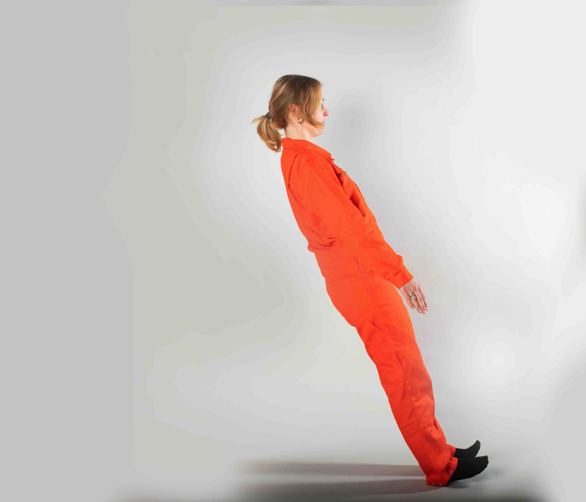
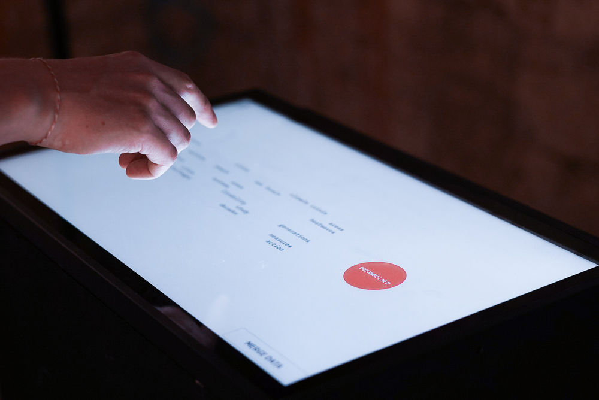
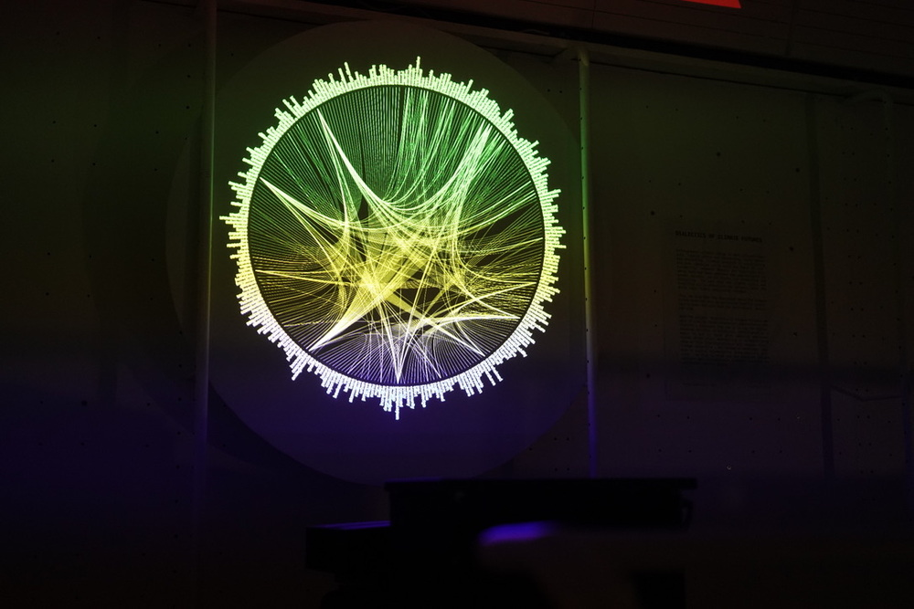
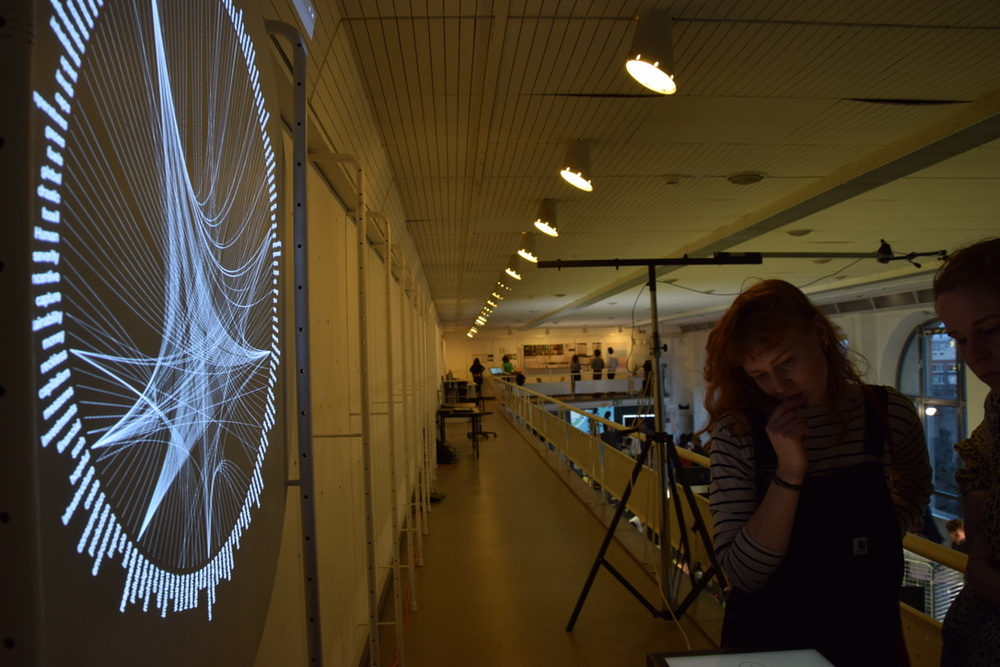
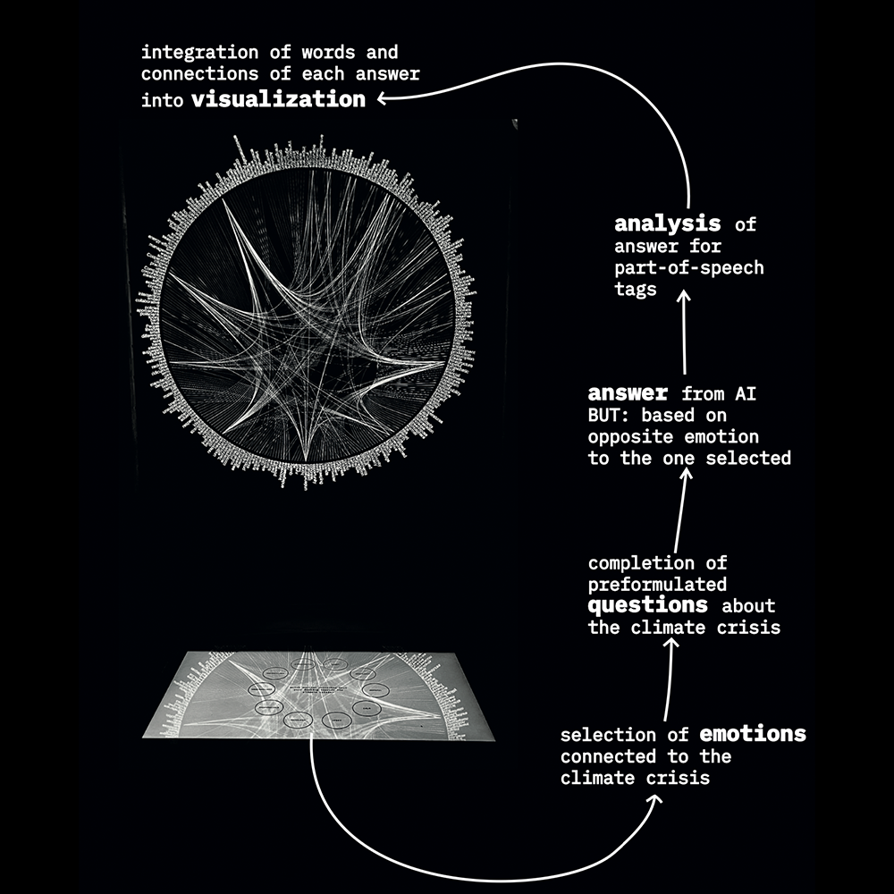
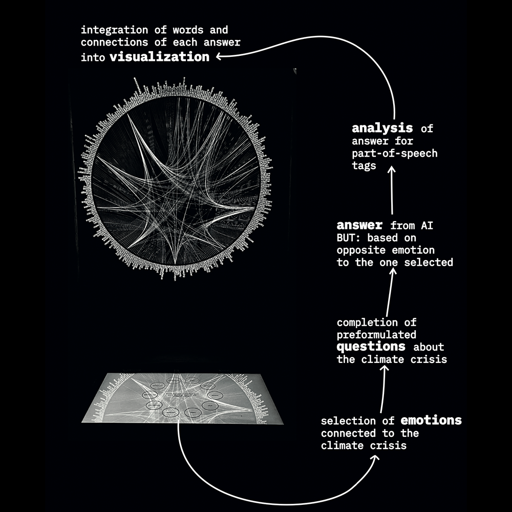
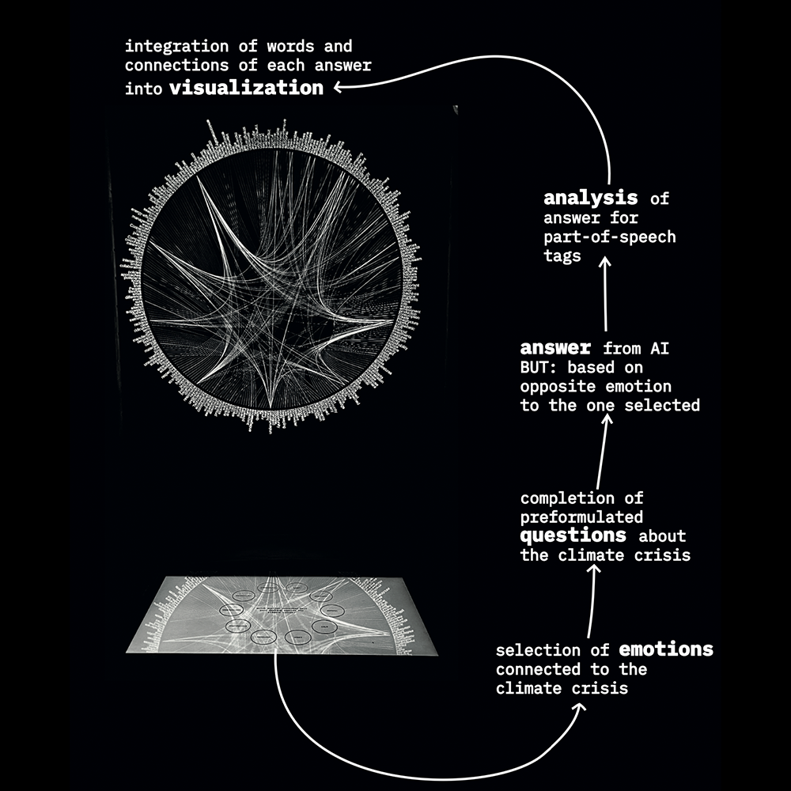

der fall des falls: das gefangenendilemma
2024, photoseries
Der Fall des Falls: Das Gefangenendilemma aims at visualizing the concept of the prisoners dilemma.




 

Anthropogenic climate change is more relevant than ever. Despite the scientific evidence that has been gathered and substantiated in recent decades, social fronts are sharpening and polarising.
The fact that the climate crisis and resulting policy affect all our futures, makes the whole topic highly emotionally charged. Thus, we find that the discussion about the climate crisis must not only be approached from the quantitative side, but also from the qualitative, emotional side.
The interactive installation utilizes a touch screen, which allows users to select their emotions related to the climate crisis and fill in pre-formulated questions.
The submitted question is processed by a generative pre-trained transformer (GPT) language model, which generates an answer based on the opposing emotional state that was previously selected.
The resulting answer is then analyzed for its part-of-speech (POS) tags and visualized using a "Hierarchical Edge Bundling" algorithm.
